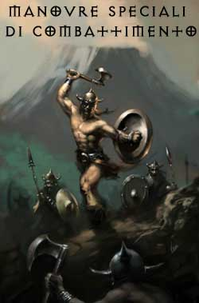
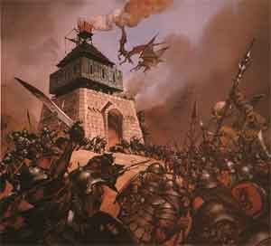
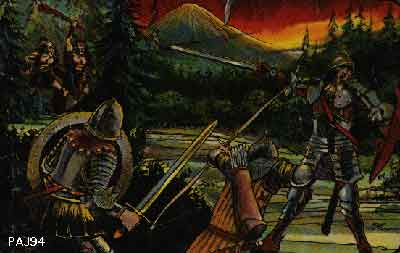
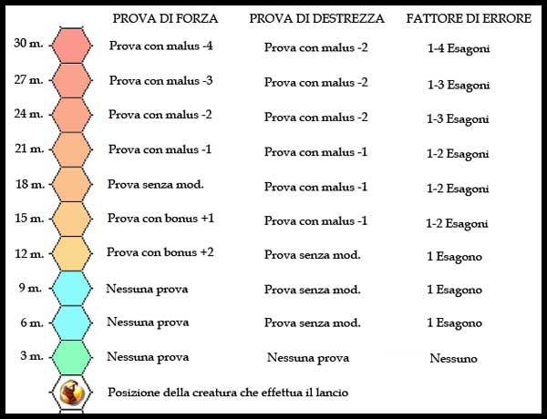
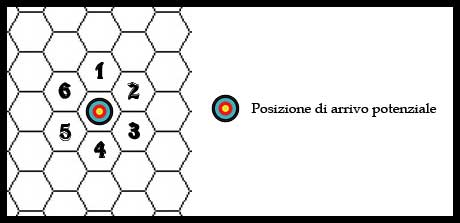

In alcuni casi colui che combatte si trova in condizioni particolari che peggiorano la sua situazione. Le condizioni più comuni sono le seguenti :
Incapacitato (incapacitated) : Chi è incapacitato può continuare a muoversi (a meno che non sia diversamente specificato) ed a compiere le sue azioni ma le sue capacità di azione sono ridotte. Per questo motivo riceve una penalità di -2 a tutti i suoi tiri ed il 20% di non riuscire a concentrarsi nel lancio delle magie, inoltre può muoversi solo alla metà del suo fattore movimento. Se costretto ad effettuare un tiro (ad es. un tiro salvezza) costui riceve una penalità di -2 (-10% ai tiri salvezza) su tutti i tiri contro effetti che sarebbero stati più facili da evitare qualora costui fosse stato in grado di muoversi normalmente. Gli avversari che lo attaccano ricevono un bonus di +2 al tiro per colpire.
Impedito (hindered) : Chi è impedito può continuare a muoversi (a meno che non sia diversamente specificato) ed a compiere le sue azioni ma le sue capacità di azione sono ridotte. Per questo motivo riceve una penalità di -3 a tutti i suoi tiri ed il 30% di non riuscire a concentrarsi nel lancio delle magie, inoltre può muoversi solo alla metà del suo fattore movimento. Se costretto ad effettuare un tiro (ad es. un tiro salvezza) costui riceve una penalità di -2 (-10% ai tiri salvezza) su tutti i tiri contro effetti che sarebbero stati più facili da evitare qualora costui fosse stato in grado di muoversi normalmente. Gli avversari che lo attaccano ricevono un bonus di +3 al tiro per colpire.
Stordito (stunned) : Chi è stordito non può muoversi od effettuare alcuna azione, ma si considera ancora alzato sulle sue gambe. Se costretto ad effettuare un tiro (ad es. un tiro salvezza) costui riceve una penalità di -3 (-15% ai tiri salvezza) su tutti i tiri contro effetti che sarebbero stati più facili da evitare qualora costui non fosse stato stordito (fosse stato in grado di muoversi normalmente). Gli avversari che lo attaccano ricevono un bonus di +3 al tiro per colpire e +2 al punteggio sul dado base delle ferite (un bonus che quindi migliora esclusivamente il tiro effettuato con il dado entro il risultato massimo previsto dal dado stesso) inoltre non si considererà il suo bonus della destrezza e dello scudo alla classe armatura.
Assordato (deaf) : Chi è assordato non può sentire alcun suono. Per tale motivo costui riceve una penalità di -1 ai tiri sulla sorpresa, +1 ai tiri per l'iniziativa ed il 20% di fallire nel lancio di incantesimi che richiedano l'utilizzo di componenti verbali.
Accecato
(blind) : Chi è accecato può muoversi a suo rischio e pericolo (in
relativa sicurezza può procedere ad 1/3 della sua velocità, se si muove
più velocemente deve effettuare un tiro salvezza contro paralisi o inciampare
sul posto e cadere knockdown),
in ogni caso se si tratta di creature volanti queste non potranno volare e se
già in volo saranno costrette ad un immediato atterraggio di fortuna (tiro
salvezza contro paralisi per non subire 1d4 danni per loro size di
grandezza).
Inoltre chi è accecato non può essere sicuro della direzione che sta seguendo
(a meno che non sia in costante contatto con un oggetto, ad es. seguendo un muro
con una mano) per cui durante ogni round di movimento dovrà tirare un dado da
dieci, con un risultato di 1-5 si dirigerà nella direzione voluta (1-7 se si
possiede la competenza blind fighting) con un risultato superiore si
dirigerà in una direzione determinata casualmente. Il cieco può anche provare
a dirigersi verso la fonte di un rumore che avverte durante il round perché
ciò avvenga costui deve superare una prova di sentire rumori, se la prova ha
successo questi si dirigerà esattamente verso la fonte del suono che ha scelto
altrimenti si applicherà la normale su menzionata per determinare la direzione
delle creature accecate.
Il cieco potrà effettuare attacchi con una penalità di -4 al tiro per
colpire
a coloro si trovano in melee con lui.
Potrà, inoltre, lanciare solo incantesimi su se stesso, a tocco o che prevedano
un tiro per colpire. Costui riceve una penalità di -4 a tutti i suoi tiri
su azioni che avrebbero richiesto l'uso della vista (-20% ai tiri
salvezza contro qualsiasi effetto che risulti più difficile da evitare senza
disporre della vista).
Gli avversari che lo attaccano ricevono un bonus di +4 al tiro per
colpire e
+2 al punteggio sul dado base delle ferite (un
bonus che quindi migliora esclusivamente il tiro effettuato con il dado entro il
risultato massimo previsto dal dado stesso)
inoltre
non si considererà il suo bonus della destrezza e dello scudo
alla classe armatura.
Si noti che questo beneficio non si applica qualora la
creatura attaccante è anch'essa accecata.
Evitare lo
sguardo
(Avoiding Sight) : In alcune occasioni una creatura dotata di normali
organi visivi può decidere di cercare di evitare di incrociare il proprio
sguardo con quello una diversa creatura o con un determinata parte del corpo
della stessa (od anche evitare di guardare un determinato oggetto), al fine di
evitare effetti magici o poteri naturali pericolosi, ciò senza chiudere
totalmente gli occhi (metodo sicuro di evitare lo sguardo ma che rende la
creatura del tutto accecata per il round in corso). La creatura, quindi, agirà
provando a tenere lo sguardo particolarmente basso o centrato su un particolare
diverso da quello che si vuole evitare. Nel round in cui la creatura decide di
agire in questo modo costei otterrà una possibilità pari al 50% di evitare di
incrociare il proprio sguardo con ogni singola fonte di pericolo (il tiro va
ripetuto ogni round e per ogni singola fonte di pericolo). In ogni caso anche
qualora tale tiro fallisco e la creatura osservi per sbaglio la fonte del
pericolo questi otterrà un bonus di +1 al tiro salvezza eventualmente a
lei concesso.
Allo stesso tempo, però, chi effettua tale manovra non potrà combattere e
muoversi in modo efficiente ricevendo una penalità di -2 a tutti i suoi tiri ed il 25% di non
riuscire ad effettuare il lancio delle magie (ad eccezione di quelle
centrate su se stesso), inoltre costui non potrà in alcun caso muoversi di più
del suo normale fattore movimento (non potrà quindi correre od effettuare la
manovra di carica). Costui riceverà anche una penalità di -2 a tutti i suoi tiri
su azioni che avrebbero richiesto l'uso della vista (-10% ai tiri
salvezza contro qualsiasi effetto che risulti più difficile da evitare senza
poter guardare normalmente). Gli avversari che attaccano
chi combatte in questo modo ricevono, inoltre, un bonus di +2 al loro tiro per
colpire.
Paralizzato
(hold) : Chi è paralizzato non può muoversi od effettuare alcuna
azione. Se costretto ad effettuare un tiro (ad es. un tiro salvezza) costui
riceve una penalità di -5 (-25% ai tiri salvezza) su tutti i tiri contro
effetti che sarebbero stati più facili da evitare qualora costui fosse stato in
grado di muoversi. Gli avversari che lo attaccano ricevono un bonus di +5 al tiro
per colpire e
+3 al punteggio sul dado base delle ferite (un
bonus che quindi migliora esclusivamente il tiro effettuato con il dado entro il
risultato massimo previsto dal dado stesso)
inoltre
non si considererà il suo bonus della destrezza e dello scudo
alla classe armatura. Si noti, inoltre, che una creatura paralizzata
nonostante continui ad occupare la propria posizione (che quindi non può essere
occupata normalmente da altra creatura) non impedisce
il passaggio delle creature ostili attraverso la stessa.
Addormentato
(sleep) : Chi è addormentato non può muoversi od effettuare alcuna
azione. Se costretto ad effettuare un tiro (ad es. un tiro salvezza) costui
riceve una penalità di -5 (-25% ai tiri salvezza) su tutti i tiri contro
effetti che sarebbero stati più facili da evitare qualora costui fosse stato
sveglio ed in grado di muoversi. Gli avversari che lo attaccano ricevono un bonus di +5 al tiro
per colpire e
+3 al punteggio sul dado base delle ferite (un
bonus che quindi migliora esclusivamente il tiro effettuato con il dado entro il
risultato massimo previsto dal dado stesso)
inoltre
non si considererà il suo bonus della destrezza e dello scudo
alla classe armatura.
Quando chi è
addormentato si sveglia (si consideri che chi è addormentato e subisce una
qualsiasi danno si sveglia automaticamente) potrà agire solo a partire dal round
successivo rispetto a quello nel quale si è verificato l'evento che ha causato
il risveglio. Costui, però, sarà ancora parzialmente stordito dalla sonnolenza
nei quattro rounds successivi a quello in cui si è svegliato e subirà le
seguenti penalità (gli avversari non avranno benefici al loro tiro per colpire):
1° round : -4 ai tiri per
colpire, -12 % ai tiri salvezza e 40% di possibilità di fallire la
concentrazione per il lancio della magia;
2° round : -3 ai tiri per colpire, -9 % ai tiri salvezza e 30% di
possibilità di fallire la concentrazione per il lancio della magia;
3° round : -2 ai tiri per colpire, -6 % ai tiri salvezza e 20% di
possibilità di fallire la concentrazione per il lancio della magia;
4° round : -1 ai tiri per colpire, -3 % ai tiri salvezza e 10% di
possibilità di fallire la concentrazione per il lancio della magia.
Si noti,
inoltre, che una creatura addormentata nonostante continui ad occupare la
propria posizione (che quindi non può essere occupata normalmente da altra
creatura) non impedisce il passaggio delle creature
ostili attraverso la stessa.
Attacco alle spalle : Chi attacca una creature alle spalle riceve un bonus di +2 al tiro per colpire e +2 al punteggio sul dado base delle ferite (un bonus che quindi migliora esclusivamente il tiro effettuato con il dado qualora questo non sia risultato già il massimo) inoltre non si considererà il bonus della destrezza e dello scudo sulla classe armatura del bersaglio. Tale attacco può essere effettuato solo in corpo a corpo. I benefici dell'attacco alle spalle non sono cumulabili con quelli delle condizioni sopra previste ma saranno applicati solo le penalità più gravose.
Posizione sopraelevata : Chi attacca una creature da una posizione sopraelevata riceve un bonus di +1 al tiro per colpire, chi attacca una creatura che si trova in una posizione sopraelevata rispetto alla propria riceve, invece, un malus di -1 al tiro per colpire.
Quando durante un combattimento una creatura che già si trova in un melee con un'altra creatura, per qualsiasi motivo, lascia il corpo a corpo allontanandosi con un qualsiasi tipo di movimento, potrà subire un attacco di opportunità da parte di tutte le creature che si trovavano in melee con lei.
Subisce questo tipo di attacco anche chi passa a distanza ravvicinata da uno o più nemici spostandosi con un qualsiasi tipo di movimento. La distanza alla quale può effettuarsi l'attacco di opportunità sulle creature che passano senza particolare cautele varia a seconda delle dimensioni delle creatura alla quale si passa vicino:
Creature
Tiny o Small possono effettuare l'attacco di opportunità contro
chi passa ad 1 metro.
Creature Medium possono effettuare l'attacco di opportunità contro chi
passa a 2 metri.
Creature Large possono effettuare l'attacco di opportunità contro chi
passa a 3 metri.
Creature Huge possono effettuare l'attacco di opportunità contro chi
passa a 4 metri (2 esagoni).
Creature Gargantuan possono effettuare l'attacco di opportunità contro
chi passa a 5 metri (2 esagoni).
Le creature che possono effettuare l'attacco di opportunità anche su chi si
sposta a due
esagoni di distanza non possono, però, effettuare tale
attacco su chi effettui solo un movimento di avvicinamento diretto verso costoro.
Si tratta di un attacco molto vantaggioso in quanto è una free action che ha luogo non appena la creatura inizia ad allontanarsi. Questo attacco avviene non appena l'avversario inizia ad allontanarsi dal melee ossia ad un'iniziativa pari al tiro del dado di iniziativa di chi si allontana senza alcun modificatore. Si noti che non occorre dichiarare questo attacco nella fase delle intenzioni, inoltre, chi lo effettua potrà comunque effettuare tutte le altre azioni che aveva precedentemente dichiarato di voler effettuare ad eccezione del lancio di un incantesimo, a meno che non abbia terminato il lancio della magia in una fase del round precedente all'attacco di opportunità (si tratta, infatti, pur sempre di un attacco in combattimento, azione incompatibile con il lancio delle magie, quindi qualora il personaggio decidesse di effettuarlo abortirebbe automaticamente il lancio della magia in corso).
L'attacco di opportunità si considera come un attacco alle spalle (sempre comune anche se lo ottiene un personaggio appartenente alla classe dei ladri) e si applicano tutti i bonus previsti per l'attacco alle spalle. I personaggi che effettuano tale attacco, inoltre, accumulano un punto fatica supplementare oltre a quello che eventualmente acquisiranno per le azioni del round in corso.
Ogni creatura può effettuare in ogni caso un unico attacco di opportunità al round indipendentemente dal numero dei suoi attacchi e dal numero di creature sulle quali può effettuare il colpo (quindi dovrà selezionare la creatura sulla quale effettuare questo colpo e se si tratta di una creatura dotata di attacchi multipli simultanei deve scegliere con quale attacco effettuare il colpo di opportunità).
Quando due creature (o gruppi) si incontrano occorre stabilire se alcune di esse essendo preparate all'incontro hanno la possibilità di reagire immediatamente o meno.
In linea di massima per sapere se una creatura è presa di sorpresa occorre verificare se la stessa stava compiendo un'altra qualsiasi azione nel round dell'incontro o meno. Le condizioni che possono verificarsi sono le seguenti :
La creatura è attenta ad eventuali incontri ostili. Si può essere attenti dichiarando di fare la "guardia" da una postazione fissa. In questo caso all'incontro di una creatura ostile improvviso e non preannunciato da fatti specifici avvenuti nel round precedente la creatura deve tirare un tiro sulla sorpresa (sarà sorpresa con un risultato 1-3 su 1d10, ottenendo il bonus del reaction adjustment della destrezza e le penalità derivanti dalla creatura e dalle circostanze di fatto) e potrà agire nel round in questione solo se non risulterà sorpresa.
Fare la "guardia" ad una postazione fissa è un compito molto gravoso e dopo alcune ore la sentinella perderà la dovuta concentrazione. Una normale sentinella si considererà pienamente efficace (a meno di magie o di speciali circostanze, ad es. la guardia è un non-morto o costruito) solo per le prime tre ore di "guardia" dopo di che dovrà sospendere e riposare per almeno 8 ore, se non sospende e continua il turno avrà in ogni ora successiva una penalità crescente di -1 alla sorpresa fino ad una penalità massima di -5 dalla decima ora in poi.
Quando si sta attenti ad incontri ostili non è possibile compiere alcuna altra azione complessa. Solo camminare ad una velocità pari alla metà del proprio normale movimento (ossia pari al movimento di combattimento), in questo caso è possibile dichiarare di essere "guardinghi" e pronti ad agire alla vista di creature nemiche.
La creatura sta compiendo una qualunque azione complessa non aspettandosi l'incontro (ad es. sta mangiando, giocando a carte, studiando, camminando, ecc...): in questo caso potrà effettuare il tiro per la sorpresa ma subirà una penalità di -4.
La creatura è in attesa di uno specifico incontro. Quando si ha la consapevolezza dell'approssimarsi di un incontro e lo si attende non è possibile essere presi di sorpresa. Se ad es. una guardia ha sentito un rumore sospetto dietro l'angolo e decide di aspettare con l'arma sguainata chi arriva non dovrà tirare la sorpresa all'arrivo dell'eventuale nemico. Ovviamente può mantenersi questo grave stato di allerta, che impedisce ogni altra azione, solo per brevi periodi di tempo.
Si noti che nell'ipotesi in cui un nemico appare alla vista di chi se lo aspetta o di chi facendo la guardia non viene sorpreso, l'azione di chi non è stato sorpreso (qualora la sua iniziativa sia più veloce dell'arrivo del nemico) sarà posticipata fino al momento del round in cui sarà logicamente possibile per costui agire. Inoltre si tenga presente che i caster nella quasi totalità dei casi non possono lanciare magie a target su bersagli che non siano per costoro visibili fin dall'inizio del round in cui dichiarano di lanciare queste magie.
Esempio di applicazione delle regole precedenti: Immaginiamo che una creatura cammini e girando dietro delle rocce veda una sentinella a 15 metri di distanza che ha come sua unica azione dichiarata quella di fare la guardia all'ingresso di una caverna e di attaccare nemici in avvicinamento. Orbene ammettendo che la sentinella non abbia sentito arrivare (ad es. per i rumori provocati dalle corazze e dalle armi di chi si avvicina) il nemico, dovrà effettuare un tiro sulla sorpresa. Qualora non sia sorpresa potrà attaccare il nemico con un'iniziativa che seppure più veloce sarà comunque almeno pari a quella di movimento a portata del nemico.
Una creatura può decidere di effettuare una manovra di attacco contro un nemico che non ha ancora identificato all'inizio del round. Questa condizione si verifica ad esempio quando un guerriero dichiara di entrare in una sala (facendo mezzo movimento) e attaccare il primo nemico che incontra. Quando questa condizione si verifica la creatura può decidere di attaccare una creatura determinata anche se non ha la certezza di trovarla, se la trova potrà operare l'attacco su di lei altrimenti perderà l'azione di attacco, altrimenti può decidere di attaccare una creatura a caso, in questo caso si sceglierà con la tavola seguente quale creatura sarà attaccata fra quelle possibili.
Ogni volta che una creatura decide di attaccare una creatura a caso fra quelle che si presenteranno a tiro nel corso del round si tirerà a sorte fra i possibili obiettivi per determinare chi è attaccato. Se gli obiettivi si presentano nello stesso round a tiro dell'attaccante ma in ordine di fila o di iniziativa differente non si sorteggerà fra loro alla pari ma dando priorità a chi si trova in una posizione antecedente secondo questa tabella (fra le creature nella stessa posizione si sorteggia alla pari) :
| 2 POSIZIONI | Dado % |
| Prima | 1-65 |
| Seconda | 66-00 |
| 3 POSIZIONI | Dado % |
| Prima | 1-50 |
| Seconda | 51-80 |
| Terza | 81-00 |
| 4 POSIZIONI | Dado % |
| Prima | 1-40 |
| Seconda | 41-65 |
| Terza | 66-85 |
| Quarta | 86-00 |
| 5 o + POSIZIONI | Dado % |
| Prima | 1-30 |
| Seconda | 31-55 |
| Terza | 56-75 |
| Quarta | 76-90 |
| Quinta e successiva | 91-00 |
Esempio di applicazione delle regole precedenti: Immaginiamo che due guerrieri e un mago decidono di entrare in una stanza, in questa sala ci sono due coboldi che hanno sentito le loro voci nel round precedente ma non conoscono la composizione del party, per questo motivo si preparano ad attaccare chiunque entri. I guerrieri decidono di entrare per primi insieme mentre il mago entra per secondo (sempre nello stesso round) essendo quindi due posizioni di ingresso differente i due coboldi tireranno 2 dadi da 100 sulla prima tabella. Il primo effettua un 78 quindi attaccherà il mago mentre il secondo tira un 54 quindi attaccherà uno dei guerrieri (scelto a sorta alla pari in quanto entrambi in prima fila):
Si può effettuare al posto di un attacco con un arma
che abbia un fattore parata almeno
pari a 1 (si può anche effettuare con lo scudo vedi arti di combattimento). Il blocco è
una parata dura con la quale si deflette il colpo in arrivo dell’avversario.
Per sapere se il tentativo di bloccare l’attacco avversario ha avuto effetto,
entrambi i combattenti effettuano un tiro per colpire. Colui che vuole bloccare con una penalità di – 2.
Se colui che desidera bloccare colpisce la stessa AC che l'avversario ha colpito
avrà
bloccato il suo colpo, altrimenti avrà solo perso l’attacco e il nemico
potrebbe averlo colpito (vale lo stesso tiro per colpire). Se il tiro per
colpire per il bloccaggio
ha un risultato pari a un numero da 1 a 3 naturale colui che ha provato a bloccare dovrà effettuare un tiro salvezza con la propria
arma (se con lo scudo questo verrà danneggiato come se fosse stato colpito).
L’attacco che si vuole bloccare deve essere dichiarato nella fase delle
intenzioni. Colui che ha dichiarato il tentativo di blocco ha la stessa
iniziativa del colpo che si vuole bloccare. Questa manovra e’ molto utile se
si hanno attacchi multipli. E' possibile bloccare solo attacchi corpo a corpo
diretti contro
se stesso. E non è possibile bloccare attacchi di mostri di due dimensioni
superiori (un Medium non può bloccare creature Huge o superiori).
Con
la manovra di parata il personaggio tenta di intercettare i colpi in arrivo
parandoli con il suo scudo con la sua arma o con entrambi. E' possibile ottenere
i bonus dovuti alla parata unicamente nei confronti
degli attacchi frontali. Si tratta di un'azione di
combattimento che costa un punto fatica e dura per tutto il round in questione. Chi
effettua questo tipo di parata,
inoltre, deve stare fermo non potendosi muovere nel
round in corso. Nei conforti degli attacchi provenienti dalla
posizione frontale la classe armatura di chi si mette in parata diminuisce a
seconda del fattore di parata dell’arma, di quello dello scudo e della bravura
nell'uso dell'arma del personaggio, come sancito nella tavola seguente:
Esperto
- 1
Campione
- 1
Maestro
- 2
Gran
Maestro - 2
Uno
scudo rotella riduce la classe armatura di un ulteriore - 1
Uno
scudo small riduce la classe armatura di un ulteriore - 1
Uno
scudo medio riduce la classe armatura di un ulteriore - 2
Uno
scudo da corpo riduce la classe armatura di un ulteriore - 3
La parata non vale contro attacchi fisici di creature di due o più dimensioni superiori a quella del difensore.
Se il personaggio non viene colpito proprio grazie ai bonus di parata dovuti allo scudo questo subirà i regolari danni previsti, se invece non viene colpito grazie ai bonus dovuti alla sua bravura nell'uso dell'arma ed al fattore parata della stessa l'arma utilizzata dovrà effettuare un tiro salvezza (si noti che un personaggio può decidere anche di difendersi solo con l'arma o solo con lo scudo):
|
Materiale
arma attaccante |
Materiale
arma difendente |
Tiro
salvezza |
|
Acciaio |
Acciaio |
6 |
|
Acciaio |
Metallo
vario |
7 |
|
Acciaio |
Legno |
9 |
|
Metallo
vario |
Acciaio |
5 |
|
Metallo
vario |
Metallo
vario |
6 |
|
Metallo
vario |
Legno |
8 |
|
Legno |
Acciaio |
3 |
|
Legno |
Metallo
vario |
4 |
|
Legno |
Legno |
5 |
|
Attacchi
fisici di mostri S
\ M \ L |
Acciaio |
3
\ 4 \ 6 |
|
Attacchi
fisici di mostri S
\ M \ L |
Metallo
vario |
4
\ 5 \ 7 |
|
Attacchi
fisici di mostri S
\ M \ L |
Legno |
6
\ 7 \ 9 |
* Le armi magiche impongono i loro
bonus e\o malus come
modificatori al tiro salvezza dell’arma di chi difende.
La
parata contro i proiettili
delle armi da tiro che provengono di fronte si può utilizzare solo con lo scudo,
questa forma di parata non può essere utilizzata se il personaggio si trova in melee
con altre creature.
La
classe armatura migliora :
Uno
scudo rotella riduce la classe armatura di un ulteriore - 1
Uno
scudo small riduce la classe armatura di un ulteriore - 2
Uno
scudo medio riduce la classe armatura di un ulteriore - 3
Uno
scudo da corpo riduce la classe armatura di un ulteriore - 4
Chi
effettua questo tipo di parata,
inoltre, deve restare fermo nel round in questione non potendo effettuare alcun
movimento. Se il personaggio non viene colpito proprio grazie ai
bonus di parata lo scudo subirà
regolari danni.
Un
personaggio può decidere di mirare un colpo ad una particolare locazione del
bersaglio. Per esempio attaccare in testa ad un avversario che non abbia un elmo,
alle gambe un avversario che non abbia armatura sulle gambe, oppure al corpo di
un mostro che ha una armatura minore. I colpi mirati vanno annunciati prima del
tiro per colpire nella fase delle intenzioni. Chi effettua un colpo mirato
ottiene una penalità
supplementare al suo attacco di
+ 1 all’iniziativa. Inoltre subirà una penalità al tiro per
colpire che varia a seconda della difficoltà di colpire quella locazione,
questa tabella può essere indicativa :
Colpire
una parte grande del bersaglio (es.
torso
od un oggetto large)
penalità di – 3
Colpire
una parte media del bersaglio
(es.
arto
od
un oggetto medium)
penalità di – 4
Colpire
una parte piccola del bersaglio (es.
testa
od
un oggetto small)
penalità di – 5
Il
colpo mirato può servire per colpire maglio un avversario, per esempio un
guerriero con Thac0 15 vuole colpire un guerriero con una field plate e senza destrezza, dovrebbe colpire AC 2. Decide invece
di mirare alla testa in quanto il guerriero non ha elmo, dovrà allora colpire AC 10 con una penalità di – 5, quindi AC 5.
Qualora colpisca effettuerà i normali danni all’avversario ma se
il tiro risulterà critico non occorrerà tirare la locazione danneggiata che
sarà quella mirata.
Il colpo mirato può essere utilizzato anche per attaccare oggetti che un
personaggio possiede (es. la bacchetta del mago) le penalità sono le stesse e
si applicano alla classe armatura migliore della creatura ma,
qualora si colpisca con successo, la vittima non subirà danni ma il suo oggetto dovrà
effettuare un tiro salvezza per evitare di rompersi.
Un
personaggio che decida di provare a disarmare un altro dovrà effettuare questa
manovra al posto del suo attacco. L’iniziativa è la stessa che avrebbe avuto
se avesse normalmente attaccato. Per sapere se il tentativo di disarmare
l’avversario ha avuto effetto, entrambi i combattenti effettuano un tiro per
colpire. Colui che vuole disarmare con
una penalità di – 4.
Se colui che desidera disarmare colpisce una AC più bassa del bersaglio lo avrà
disarmato. Con un’arma di
dimensioni small non è
possibile tentare di disarmare chi
impugna un’arma di
dimensioni large. Se colui che
deve essere disarmato impugna la propria arma con due mani, ottiene un bonus al
tiro per colpire di + 3. Una volta disarmato l’arma volerà di mano dalla
vittima e cadrà ad 1-4 metri da questa nella direzione casuale :
1
dritta
avanti
2
avanti a
destra
3
avanti a
sinistra
4
dietro a
destra
5
dietro a
sinistra
6
dritta
dietro
La
manovra di disarmare può effettuarsi anche su uno scudo ma,
qualora sia avvenuta con successo, avrà come unico risultato che lo scudo
non potrà essere utilizzato solo
per il resto del round in corso.
Può
essere effettuato solo se si ha una mano libera (- 5 al tiro per colpire) o
entrambe (- 4 al tiro per colpire). L’iniziativa è quella di movimento, se il
tiro per colpire riesce significa che il personaggio ha afferrato in melee
l’arma, (la staffa, a bacchetta, la pozione, ecc…)
o una parte del corpo della vittima. A questo punto è possibile
strappare di mano l’oggetto afferrato, immediatamente entrambe le creature
faranno un check di forza (chi usa solo una mano ha una penalità di + 2). Se il
check è vinto da chi ha afferrato l’oggetto vuole dire che è riuscito a
strappare lo stesso dalle mani della vittima. Occorre rammentare che la vittima
a differenza dell’attaccante potrebbe non aver ancora compiuto la propria
azione e che quindi dopo aver perso l’oggetto potrà effettuarla. Se la
vittima vince il check l’attaccante molla la presa e la vittima potrà
utilizzare l’oggetto nello stesso round o effettuare una diversa azione. Se il
risultato del check è di parità l’oggetto è conteso a questo punto la
vittima può decidere di lasciarlo e effettuare un’altra azione (sempre che
abbia perso l’iniziativa e non abbia ancora agito) oppure decidere di
continuare a contendere per l’oggetto, se sceglie perde le azioni rimanenti ma
il round successivo viene (come priam azione del round) ripetuto il check dopo
il quale entrambe le creature potranno
agire con un malus all’iniziativa di +
3. Non è
possibile afferrare spade e altre
armi che non si possono impugnare sulla lama o che potrebbero ferire
l’attaccante. E’ possibile però afferrare il braccio della vittima che
mantiene l’arma, in questo caso finche l’attaccante vince i check o sono in
pareggio rende inutilizzabile l’arto in questione con la sua arma (l’altro
arto potrà essere usato) inoltre il suo movimento deve essere calcolato
sommando al proprio peso trasportato quello della vittima. Se lo perde
l’avversario si libera e potrà agire (se è un round successivo al primo
potranno agire entrambi con un malus di + 3). Questa azione può essere anche
utilizzata per bloccare un’artigliata o un morso di un mostro. Ricordarsi che
la forza dei mostri se non è specificato è pari al risultato del tiro in
questa tabella :
Score
T
S
M
L
H
G
3
2
4
6
13
15
18
4
3
5
7
14
17
18/01
5
4
6
8
15
18
18/51
6
5
7
9
16
18/01 18/76
7
6
8
10
17
18/51 18/91
8
7
9
11
18
18/76 18/00
9-12
8
10
12 18/01
18/91 19
13
10
11
13 18/51
18/00 20
14
11
12
14 18/76
19
21
15
12
13
15 18/91
20
22
16
13
14
16 18/00
21
23
17
14
15
17 19
22
24
18
15
16
18 20
23
25
When you have finished generating the
creature’s ability scores, all modifiers apply to creatures in the same way
they do for characters. Creatures gain the warrior combat bonuses for high
scores.

E’
il tentativo di placcare un avversario immobilizzandolo, è particolarmente
utile se utilizzato da più persone contro un avversario individualmente molto
forte. Coloro che attaccano in questo modo si buttano letteralmente
sull’avversario per immobilizzarlo. L’avversario
ottiene un attacco di opportunità
vincendo automaticamente l'iniziativa nei confronti di uno degli attaccanti
a sua scelta, è possibile effettuare questo attacco solo con un’arma da corpo
a corpo. L’iniziativa del tentativo di soppressione è pari all'iniziativa
di movimento del partecipante più lento all'azione. Il tentativo
si risolve con un semplice tiro per colpire contro la classe
armatura naturale dell’avversario (di solito AC 10 – dex ed alcune magie,
es. non conta armor ma conta un ring
of protection +1) non dovendosi considerare le corazze e gli scudi. Si
utilizzerà la Thac0 del migliore degli attaccanti con un bonus di + 1 per ogni
ulteriore partecipante.
Se il tiro per colpire fallisce la vittima potrà effettuare le azioni che aveva
intenzione di compiere (sempre qualora non le avesse già compiute). Se, invece,
questo tiro per colpire ha successo occorre che la vittima e l'attaccante
che ha effettuato il tiro per colpire effettuino una prova
comparata di forza applicando alla prova i seguenti modificatori:
·
+ / – 4
per taglia di differenza fra il difensore e l'attaccante (si noti che in
nessun caso è possibile provare ad atterrare creature che siano di più di due
taglie superiori).
·
+ 1 per ogni
attaccante addizionale
che non sia di più di due taglie di dimensioni inferiori rispetto al difensore.
· – 4 alla forza dell’attaccante se il difensore è dotato di quattro o più zampe.
Se il difensore vince la prova sarà rimasto in piedi e potrà effettuare le azioni che aveva intenzione di compiere (sempre qualora non le avesse già compiute).Se, invece, il difensore fallisce la prova comparativa di forza sarà stato atterrato al suolo (knockdown) assieme agli attaccanti perdendo le sue eventuali azioni successive. Altre creature (nel limite di quelle previste a seconda della dimensione della vittima) potranno attaccare le creature che si trovano al suolo utilizzando contro chi è stato atterrato il bonus previsto in caso di creatura paralizzata (hold) e contro chi lo sta mantenendo a terra quello previsto per le creature al suolo (knockdown).
Nel
round successivo le creature che mantengono l'atterrato devono decidere se
continuare a tenere a terra l'avversario oppure se lasciarlo ed alzarsi (in
questo caso sia difensore che attaccante potranno alzarsi da terra come in caso
di knockdown). Se, invece, anche uno solo degli attaccanti decidesse di
continuare a trattenere al suolo il difensore dovrà effettuarsi, come prima
azione del round, una prova comparativa di forza con i modificatori sopra
segnalati. Se la prova sarà vinta dagli attaccanti tutti resteranno al suolo
come nel round precedente, se, invece, sarà il difensore a vincere la prova,
costui si sarà liberato e potrà alzarsi da terra come in caso di knockdown
mentre gli attaccanti avranno perso il round e dovranno restare a terra knockdown.
Quando un personaggio cade a terra deve per rialzarsi sacrificare una azione (attacco) e metà del suo movimento. Tutti gli attacchi verso una creatura a terra sono effettuati con + 2 al tiro per colpire e non si considera la destrezza di colui che è caduto. Rialzarsi da terra conta un'azione, per cui un personaggio che desidera alzarsi potrà farlo e poi muoversi della metà del suo fattore movimento (ma non potrà effettuare altre azioni). Un personaggio che si trovi in melee e decida di non alzarsi e continuare a combattere da terra riceverà un malus di -2 ai propri tiri per colpire.
Un personaggio potrebbe decidere di buttarsi a terra volontariamente in quanto a terra è più protetto dal fuoco delle armi da tiro, dando agli avversari un malus di -2 al tiro per colpire con armi da tiro se da una distanza superiore ai 30 metri (a meno di 30 metri non solo non otterrà benefici ma subirà le penalità previste per chi si trova al suolo). Potrà rispondere al fuoco senza penalità con una qualsiasi balestra oppure con una penalità di -3 al tiro per colpire se attacca con un qualsiasi arco, la fionda non è utilizzabile dal suolo.
Se un personaggio che impugna una balestra caricata (o altra arma da fuoco) cade a terra (knockdown) costui dovrà superare un tiro salvezza contro paralisi o l'arma farà fuoco. Il colpo si considererà un acritico automatico (1 naturale) dovrà quindi tirarsi sulla tabella degli acritici con le armi da tiro.
BUTTARSI DAVANTI AI COLPI DEGLI AVVERSARI
Con questa manovra di combattimento una creatura
si butta letteralmente davanti ai colpi di un unico nemico da costui scelto,
che non sia di due o più taglie superiori rispetto alla
propria, in modo da evitare, ad esempio, che un suo compagno subisca gli
attacchi provenienti da costui. Questa azione (che può
avvenire anche dopo un movimento parziale)
è l'unica azione che colui che si butta può effettuare nel round
(non potrà effettuare neanche attacchi di opportunità).
Perché questa manovra sia efficace occorre che il
salvatore la effettui ad un punteggio di iniziativa che non sia più lento di
quello dei colpi sferrati dall'avversario
(i colpi più veloci raggiungeranno, infatti, normalmente
il loro bersaglio, mentre quelli contestuali o più lenti alla manovra saranno
diretti su chi si è frapposto e non sul bersaglio originario).
Quindi, tutti gli attacchi, contestuali o più lenti di questa manovra di
combattimento, che il nemico prescelto avrebbe dovuto effettuare non saranno più
diretti sul bersaglio originale ma su chi si è tempestivamente frapposto
(si tenga presente che si tratterà dei medesimi tipi di attacco
non potendo l'attaccante modificare le sue intenzioni nel corso del round,
l'attaccante potrà però decidere in ogni caso di annullare la sua azione e non
effettuare gli attacchi). Tutti gli
attacchi in corpo a corpo diretti contro chi effettua questa manovra
(sia, quindi, quelli intercettati che quelli diretti ab
origine contro costui) otterranno un
bonus di + 3 al tiro per colpire e fino a + 3 al punteggio sul dado base
delle ferite (un bonus che quindi migliora il tiro
effettuato con il dado entro e non oltre il suo risultato massimo possibile).
Frapporsi tempestivamente impedisce, inoltre, alla creatura selezionata di
effettuare anche un eventuale attacco di opportunità nei confronti di chi
trovandosi in melee con lei si allontani durante il round in questione
(sempre che la manovra sia stata quanto meno contestuale o
più rapida del momento in cui, all'interno del round, sarebbe dovuto avvenire
l'attacco di opportunità). E' possibile
frapporsi solo agli attacchi (anche se multipli)
di un'unica creatura. Se più creature si buttano dinanzi ai colpi dello stesso
nemico solo quella più veloce (scelta in base
all'iniziativa ed in caso di pari risultato con selezione casuale)
potrà frapporsi mentre le altre dovranno
necessariamente annullare la loro manovra (perdendo il
round, eventualmente dopo il loro movimento parziale, ma senza offrire ai loro
nemici alcun bonus ai loro attacchi).
Recuperare un’arma caduta od un qualsiasi oggetto da terra è considerata un'azione complessa, tale azione può effettuarsi, quindi, solo assieme ad un mezzo movimento (precedente o successivo). Chi effettua tale azione sarà soggetto ad una penalità alla classe armatura pari a + 2 e non potrà utilizzare i bonus della destrezza (potrà però usare quelli dello scudo) fino a che non avrà raccolto l'arma, azione che avviene ad un fattore di iniziativa pari a quello del suo pieno movimento (con la penalità del mezzo movimento se ha dovuto spostarsi per raccogliere l'oggetto dal suolo).

A
differenza del normale combattimento corpo a corpo nel combattimento ravvicinato
due creature combattono praticamente unite e abbracciate. Quando una creatura
decide di entrare in combattimento ravvicinato con un’altra deve vincere una
prova sulla destrezza contrapposta con la vittima. Se perde la prova non potrà
effettuare alcuna altra azione nel round. Qualora vinca la prova la
vittima se impugna un’arma di dimensioni M o L potrà effettuare un
suo attacco vincendo
l'iniziativa unicamente nei confronti di chi lo vuole avvinghiare prima di
essere abbracciata. I soggetti si considereranno in corpo a corpo ravvicinato
dal momento dell'iniziativa dell'attaccante. Non avrà diritto all’attacco se ha già utilizzato
l’azione per fare qualche altra cosa o ha attaccato un altro nemico. All’iniziativa della
creatura che effettua questa manovra va comunque sommata il malus per
l'iniziativa di mezzo movimento.
Occorre
ricordare che a meno che non sia diversamente specificato:
1) Solo una creatura può entrare in combattimento ravvicinato con un’altra.
2)
Si può
entrare in combattimento ravvicinato solo fra creature aventi al massimo una taglia
di dimensione di differenza.
Una
volta entrati in combattimento ravvicinato vigono le seguenti regole :
a)
Chi
utilizza un’arma di dimensioni M ottiene una penalità di – 2 al tiro per
colpire, chi utilizza un’arma L ottiene una penalità di – 5 al tiro per
colpire se è a due mani non potrà essere utilizzata ma solo mantenuta con una
mano, chi utilizza un’arma da botta ottiene un’ulteriore penalità di – 2
al tiro per colpire.
b)
Lo scudo
non migliora la classe armatura di chi lo ha, anzi gli provoca una,
eventualmente ulteriore, penalità di – 1 al tiro per colpire.
c)
Si possono
effettuare azioni di attacco solo contro l'avversario che si trova in combattimento
ravvicinato.
d)
Non
possono essere lanciati incantesimi con componenti Somatici e/o Materiali
e)
Colui che
usa un’arma M o L e sbaglia un tiro per colpire dovrà effettuare con successo
tiro salvezza su riflessi, altrimenti farà cadere l’arma per terra.
f) Le altre creature possono attaccare uno dei combattenti ma per farlo dovranno superare un tiro salvezza su riflessi per ogni attacco (con –5% di penalità se usano armi medium, -10% se usano armi large, un'ulteriore penalità di -5% se utilizzano armi impugnandole a due mani; -20% se si usano armi da tiro o da lancio od effetti assimilabili, -10% quando utilizzano il colpo di combattimento Precisione nella Mira). Se il tiro salvezza è effettuato con successo, l’attacco punterà il bersaglio selezionato (che poi dovrà essere regolarmente colpito), se invece il tiro salvezza fallisce, l'attacco punterà l'altro bersaglio che subirà il relativo tiro per colpire e gli eventuali danni. Si noti, inoltre, che qualunque effetto (normale o magico) che possa essere diretto su una creatura puntato su un bersaglio provocherà a questo solo la metà dei danni (per eccesso) e l'altra metà alla vittima (entrambe le vittime potranno effettuare il loro individuale tiro salvezza).
Per
liberarsi dell’avversario si utilizzano le seguenti regole :
Dopo che un avversario sia entrato in combattimento ravvicinato con la vittima, alla fine di ogni round (come ultima azione) se uno solo dei contendenti desidera liberarsi, entrambi dovranno effettuare un tiro salvezza su robustezza modificato dalla forza in luogo della costituzione, qualora colui che si vuole liberare avrà superato il tiro salvezza di un ammontare maggiore di punti i due combattenti saranno separati. Ogni creatura che tenti di separali fisicamente (azione fisica complessa) darà un bonus di +5% al tiro salvezza effettuato da chi si vuole liberare.
LANCIARE UN OGGETTO A DISTANZA
Le seguenti regole disciplinano il lancio di un oggetto a mano. Queste regole
non sono utilizzate quando si desidera colpire con un oggetto una creatura (in
questo caso deve effettuarsi un normale tiro per colpire) ma allorquando si
vuole provare a lanciare un oggetto
1) Il lancio è un'azione complessa che richiede un fattore iniziativa pari a quello di un attacco fisico. Per una creatura di taglia media sarà, quindi, pari a +3. Tale azione, al pari di un attacco, farà accumulare un punto fatica.
2

